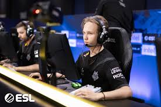
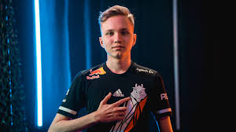
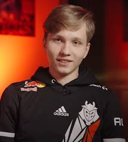

Oсипов начал увлекаться игрой в Counter-Strike 1.6 когда ему было ещё
6 лет, а спустя три года перешёл в CS:GO[5]. В десятилетнем возрасте Илья
достиг самого высокого уровня (звания) в игре — Global Elite, а к 12 годам
дошёл до максимального уровня на платформе Faceit[6].
Илья начал карьеру в июле 2019 года, вступив в команду NewBALLS,
с которой вышел в финал HardCup. В 2020 году засветился в составе
Ztayhome, одержал победу на Dell Gaming Cup #2.
NAVI Junior
В январе 2020-го был принят на испытательный срок в NAVI
Junior[7].
После перехода Ильи в новый состав, инсайдер
Алексей «OverDrive» Бирюков предостерёг молодого
игрока от ошибок в начале карьеры[8].
«Сейчас во всех пабликах повышенное внимание к m0nesy.
Напомню, что ему 14 лет, это переходный возраст из
детства во взрослую жизнь, в голове формируется общее
восприятие мира и определение себя в этом мире, идёт
переоценка ценностей. В этом возрасте человек очень
уязвим и легко подвергается влиянию извне. Я это к
тому, что он может поймать звезду и решить, что он уже
состоявшийся игрок и можно уже не так париться, а это
ведёт к печальным последствиям в плане карьеры. Ему надо
понимать, что пока он ноунейм, талантливый, но ноунейм,
которому ещё предстоит всем доказывать, что он чего-то стоит!»
Тренер NAVI Junior Амиран «Ami» Рехвиашвили отметил,
что пока m0NESY не сможет выступать на турнирах из-за возрастных
ограничений, но организация будет работать над раскрытием его
навыков и даст нужные знания[9].